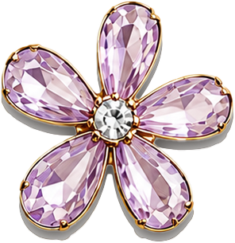

Bio
I'm Felicia Phillips, a designer, developer, and illustrator with a love for storytelling, typography, and thoughtful interaction.
My work lives at the intersection of editorial design and front-end development. I enjoy creating digital experiences that feel intentional, elegant, and meaningful.
Outside of design, you'll usually find me sketching ideas, exploring museums and bookstores, experimenting with new creative techniques, or finding inspiration in fashion, art, and everyday details.

